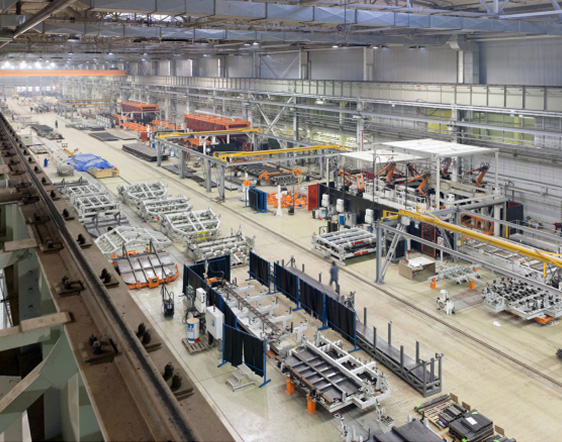
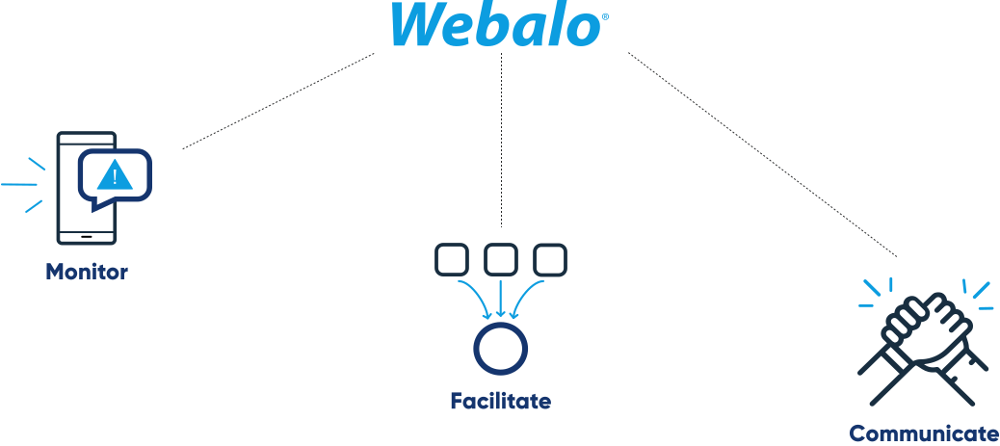
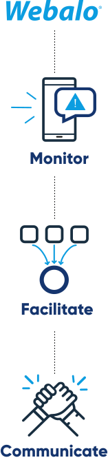

Empower your workforce Optimize your enterprise
Webalo The Platform for the Frontline Workforce
Empower the Workforce
Create a quality-driven workplace.
Monitor events, engage the workforce, automate activities. Work across platforms,
across the buisness.
Webalo is recognised for its
iron-clad value proposition, all-inclusive platform with best-in-class features, close relationships with
customers and the market, and a strong overall position in the global connected frontline workforce platforms
for the industrial and energy industry
Optimize Your Enterprise
- Ensure rapid, effective event response
- Standardize and automate operational processes
- Communicate effectively across all teams
- Visualize process performance and automate process improvement
READ NEW REPORT
Webalo enables you to rapidly respond to events, digitally engage the workforce, and
automate activities across all business areas.
Empower an agile workforce that can respond to and resolve events in
real-time
Capture the data
you've been missing
Event and workforce process data is an untapped, yet critical source of information. It carries valuable insight that enable operations to stay on plan and reach capacity.
Event and workforce process data is an untapped, yet critical source of information. It carries valuable insight that enable operations to stay on plan and reach capacity.

Enable a holistic view of operations
Leverage operations and asset data, combined with event and workforce process data from the Webalo Workforce Intelligence Center , to gain powerful, actionable insights into your operations.
Leverage operations and asset data, combined with event and workforce process data from the Webalo Workforce Intelligence Center , to gain powerful, actionable insights into your operations.
Coordinate workforce events from a single
platform


Visualize plant operations in real-time
Empower the workforce with actionable data
Providing the frontline workforce with real-time insight into operations allows rapid and effective responses to
all events.